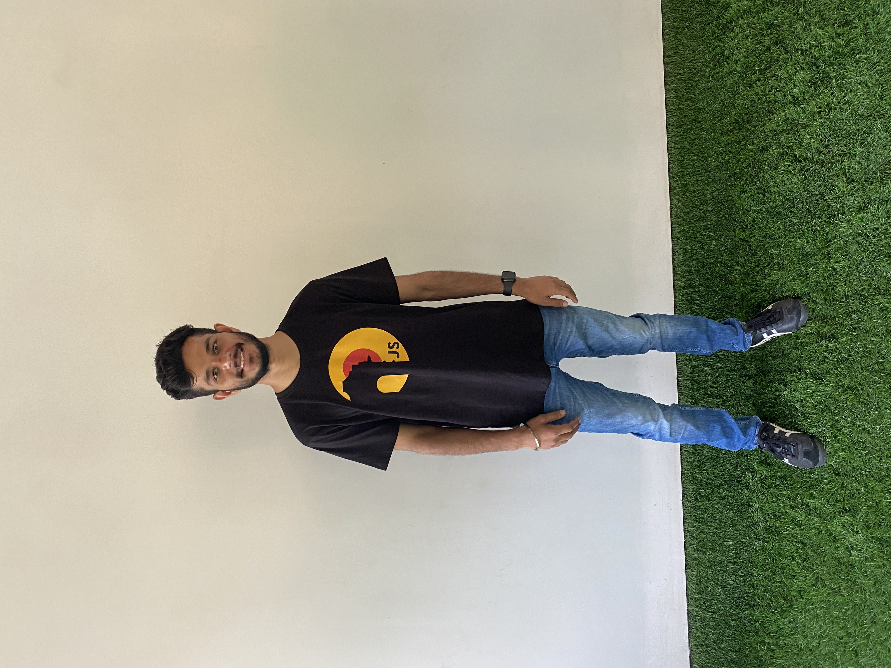

Every coder has their journey. This is mine!
I’m Saqib. I run devOrigin, a software engineering residency. I'm a Software Engineer with a strong learning mindset, working in a remote startup. I have done my engineering from LPU.
I enjoy diving deeper into engineering topics by reading books - here's a list. Currently, I'm reading the Advanced-React book and AWS Fundamentals.
I dive deep into engineering details and share my learnings across different platforms.
I have successfully assisted numerous individuals in crafting impressive resumes, acing interviews, and securing their first jobs. As a next step, I am excited to announce that I will be teaching full-stack development on devOrigin with absolute confidence and conviction.
